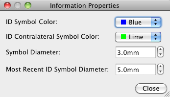

Properties
The Properties Selection, within the Information Window, gives
the user access to change the settings for the ID symbols.
ID Symbol Color: sets the color of the ID symbol that appears on the surface when the user clicks on the surface or volume in the Viewing Window.
ID Contralateral Symbol Color: sets the color of the ID symbol that appears in the corresponding location, on the other hemisphere, from where the user clicked.
Symbol Diameter: sets the size of the ID symbols that appear on the surface.
Most Recent ID Symbol Diameter:
by default, this is set to a size slightly larger than
the Symbol Diameter to make it easier for the user to see
where they last clicked on the surface or volume.
